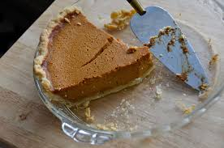

Pumpkin Pie

Description
Pumpkin pie, a remnant of 17th century colonial America, is a custard dessert
predominately using pumpkins. It is often accompanied with cinnamon, nutmeg,
ginger, and cloves for a warm, fall experience.
Ingredients
- 1 9-in pie crust (homemade or store-bought)
- 3/4 cup granulated sugar
- 1 tsp ground cinnamon
- 1/2 tsp salt
- 1/2 tsp ground ginger
- 1/4 tsp ground cloves
- 2 large eggs
- 15 oz can of canned pumpkin
- 12 oz can of evaporated milk
Steps
- Preheat oven to 425 degrees F
- In a large bowl, beat the eggs and pumpkin together
- In a separate bowl, combine the sugar, cinnamon, salt, ginger, and cloves,
then add to the pumpkin bowl
- Gradually stir in evaporated milk. Carefully pour mixture into pie shell
- Bake for 15 minutes, then reduce the temperature to 350 degrees F,
baking for 40-50 minutes longer
- Cool completely, then enjoy!